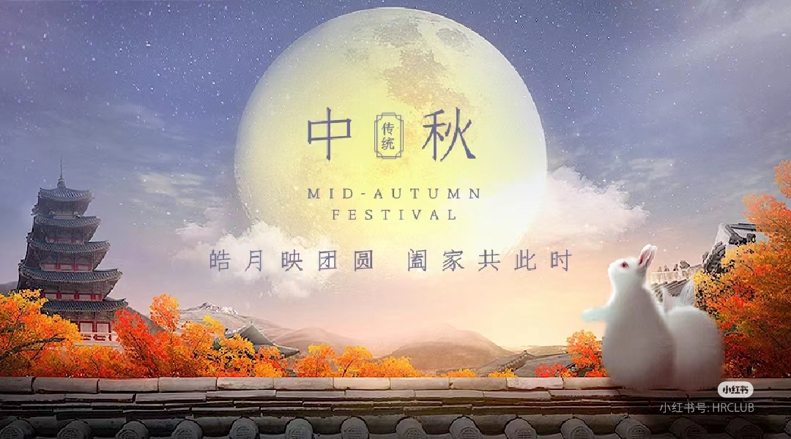
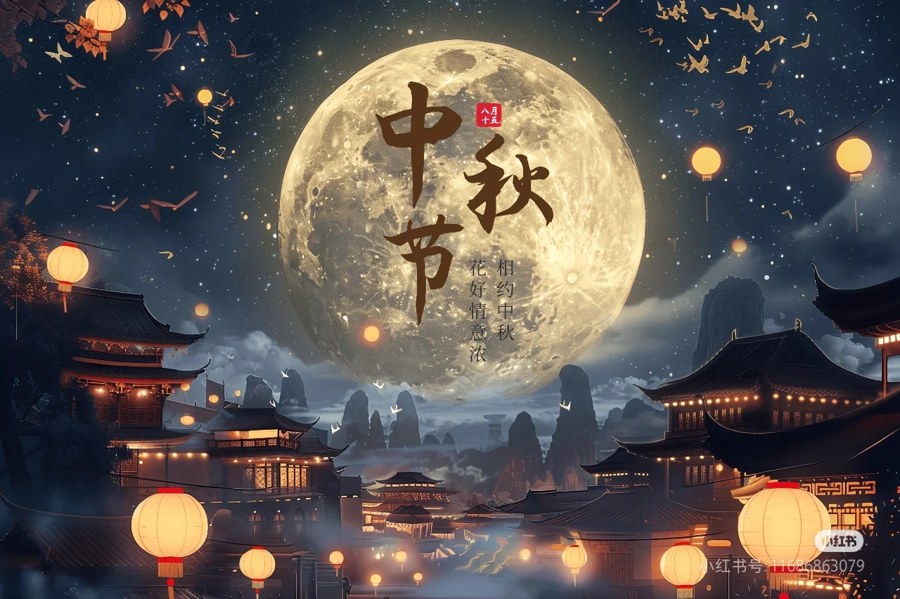

|  | ||||
|---|---|---|---|---|
|  | ||||
| 首 页 | 由 来 | 习 俗 | 饮 食 | 留 言 |
中秋节饮食文化 吃月饼 月饼，又叫月团、丰收饼、宫饼、团圆饼等，是古代中秋祭拜月神的贡品。月饼最初是用来祭奉月神的供品，后来人们逐渐把中秋赏月与品尝月饼，作为家人团圆的一大象征。月饼象征着大团圆，人们把它当作节日食品，用它祭月、赠送亲友。从历史上看，吃月饼并不是中秋节不可缺少的活动，唐宋时期就没有专门为中秋而制作的月饼可吃。但自明朝出现中秋月饼之后，它就成为中秋习俗的必要组成部分。 最初的月饼，起源于唐朝军队祝捷食品。唐高祖年间，大将军李靖征讨突厥靠月饼隐蔽的传话得胜，八月十五日凯旋，此后，吃月饼成为每年的习俗。 宋代的文学家周密，在记叙南宋都城临安见闻的《武林旧事》中首次提到“月饼”之名称。明代，中秋吃月饼在民间逐渐流传。当时心灵手巧的饼师，把嫦娥奔月的神话故事作为食品艺术图案印在月饼上，使月饼成为更受人民青睐的中秋佳节的必备食品。发展至今，吃月饼已经是中国南北各地过中秋节的必备习俗，中秋节这天人们都要吃月饼以示“团圆”。 赏桂花、饮桂花酒： 人们经常在中秋时吃月饼赏桂花，食用桂花制作的各种食品，以糕点、糖果最为多见。中秋之夜，仰望着月中丹桂，闻着阵阵桂香，喝一杯桂花蜜酒，欢庆合家甜甜蜜蜜，已成为节日一种美的享受。到了现代，人们多是拿红酒代替。 | ||||